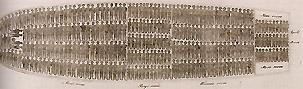
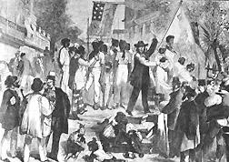
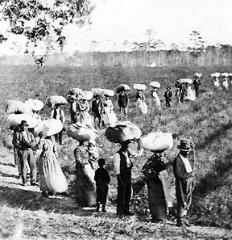

|
The slave family in mainland North America has a history extending over nearly
two centuries. The history of the slave family can be divided into three phases:
the enslavement of Africans (stretching from the late seventeenth century to
1807), the development of slave families and kinship networks (mid-eighteenth to
early nineteenth centuries), and the spread of slave family networks resulting
from the settlement of the Southwest and the internal slave trade (roughly 1810
to 1865). The kind of families slaves established and the ability of slave
families to mitigate the destabilizing impact of chattel slavery varied greatly
over time and in response to local circumstance.
Africans forced into chattel slavery in America lived in a remarkable variety of
family systems--monogamous and polygamous, matriarchal and patriarchal--but they
shared several common characteristics. West Africans gained identity in their
communities through a complex set of genealogical links that united every living
member of the tribe as kindred and traced their genealogies back to the
"living-dead" who helped unify their living descendants. Although few Africans,
other than tribal chiefs, could expect to head polygamous households, the
institution of polygamy accentuated the role of the mother in child nurture and
child development and often increased the role of the mother's brother in
childrearing.
Enslaved Africans bound for America came from societies where slavery was
common, but its characteristics were far different from the chattel slavery
found in the New World. Captured in African wars or kidnapped by other Africans
from their homes, slaves in Africa stood outside the system of kinship that
bound members of tribes together. Their masters possessed some rights in their
persons, including the right to sell them. Sometimes the slaves worked in
separate villages, producing food; at other times they served as personal
servants. Unlike chattel slaves, however, they or--more likely--their children
could hope for partial incorporation into a kin group. The status of slave,
adopted outsider, and full tribal member merged into one another, and the
specific rights a slave might have (to start a family, join a kin group, bear
free children) varied from place to place. West Africans, then, had little
experience with the absolute dichotomy of free persons and slaves they would
discover as chattels in North America.
As the Atlantic slave trade increased, however, the position of slaves in Africa
deteriorated. Rather than being incorporated into the kinship groups of their
captors, they were increasingly sold to European slave traders. Africans
destined for America lost their communal identity. Kindred, both alive and dead,
were left behind, and the slaves had to build new identities and families. As
many as a fifth (but more typically about a tenth) of the Africans died during
the Middle Passage to America because of unsanitary conditions and poor diets.
Shackled together, these men and women (who came from different tribes and spoke
different languages) began to develop shipboard friendships and to establish
fictive kinship ties with those nearby. These fragile friendships inevitably
were severed when they reached Virginia or South Carolina. Put on sale each day
until they were sold, these new friends were split among many planters.
|

Diagram showing the layout of a ship used to transport slaves
from Africa
|
The period of a substantial Atlantic slave trade to mainland British North
America and the United States stretched from 1700 to 1807, but Africans
dominated the slave population of particular regions for only short periods of
time. Although black people had lived in Virginia since the outset of
settlement, shiploads of Africans first landed in that colony late in the
seventeenth century. The number of Africans imported into the region rose from
1700 to 1740 but declined after 1740. As a result, the proportion of Africans in
the adult population declined from nearly two-thirds in 1728 to just a quarter
in 1755. A similar pattern was evident in South Carolina. There, the slave trade
began early in the eighteenth century but rose from the late 1720s to the 1770s.
Half the adult slaves in South Carolina had been born in Africa in the 1770s,
but less than a third were African-born by 1790. The brief resurgence of the
African slave trade between 1790 and 1807, when more Africans entered the United
States than had been forced to come to the colonies in any similar period of
time, probably created a similar society on the Southwest frontier, where most
Africans now worked.
African slaves in the Chesapeake region and the Carolinas created families and
kinship groups with great difficulty. In the first place, the cultural
differences between slaves on the same plantation were great. With few
exceptions, slaves on Chesapeake and Carolina plantations came from different
West African regions. Even if they came from the same region, they infrequently
shared particular dialects, religions, or kinship systems and had to forge new
kinship systems from common attitudes about kindred, causality, religion, and
historical change. Moreover, Africans had to contend with the demands made by
masters. They had to adopt English names (which destroyed the rich meaning that
their names had held) and such European mores as monogamy (which demeaned elite
African men forced into slavery).
The demographic circumstances of their new lives made the development of such a
syncretistic family system difficult. Two men were exported for every woman,
thereby making polygamous marriages nearly impossible and preventing some slave
men from mating until they had been in the country for years, if even then.
Given the very high death rates of newly imported Africans (perhaps half died
within a decade of arrival), many African men had to create fictive ties or live
entirely outside the bonds of family. The problems Africans had of creating
effective families were heightened by the small size of plantations in the
Chesapeake colonies; Africans there typically lived on farms with just ten or
fifteen slaves. (The largest planters placed their slaves on different
quarters.) Slave couples often lived on different plantations, thereby reducing
the role of husband and father to weekly visits. Even in South Carolina, where
slaves lived on units with twenty-five or thirty other blacks, marriage
opportunities were constrained by the unwillingness of native-born slave women
to marry Africans. Nevertheless, Africans who survived their captivity usually
formed conjugal families, even if husbands and wives had to live on different
plantations.
Although African women enslaved in the Chesapeake bore few children, some of
their daughters survived. The high fertility of these native-born women
diminished the proportion of Africans in the population, thereby reducing the
surplus of men in the adult slave population. By the mid-eighteenth century in
the Chesapeake and by century's end in South Carolina, there were roughly equal
numbers of men and women, and the women among them usually married and bore
their first child before reaching age twenty. Even with high infant mortality,
sufficient numbers of children survived to provide the raw material for family
formation and the development of kinship networks.
While African slaves formed families with difficulty, their native-born children
created extensive family networks. The family culture that eighteenth-century
Afro-American slaves devised persisted until after the end of slavery. Native
born slaves not only began families but created a peculiar Afro-American kinship
system. On larger plantations (where increasing numbers of slaves lived in both
the Chesapeake region and in South Carolina), husbands and wives often
cohabited. Kindred worked in the fields during the day, and cooperated in
cultivating what gardens masters permitted them to have. They taught each other
craft skills and ways to "put masse on" and socialized at their quarters outside
their small cabins once work was done. Men from smaller units visited families
on larger plantations in the evenings. Families, however, never could achieve
security, for parents, spouses, and children at any time might be sold or
transferred. Slaves therefore took advantage of other resident kindred, relying
on uncles, aunts, cousins, and grandparents to help with childrearing and to
harbor runaways.
Slaves who lived on units with fewer than twenty slaves--where half of all late
eighteenth- and nineteenth-century slaves resided--had few opportunities to
establish such family networks. Women on small plantations usually resided with
their small children, but their husbands lived elsewhere in the neighborhood.
These women had to rear their children alone or seek help from whatever kinfolk
lived on their plantation. Lacking husbands and often other kindred, these women
often created female slave networks and called on other women to help with child
care and other tasks. Slaves on small plantations could participate in fuller
family life only by visiting large plantations or running away from them.
|

A slave auction
|
The sale or transfer of slaves by masters disrupted slave families and kin
networks, often separating men from day-to-day family life, but these transfers
sometimes permitted slaves to establish complex cross-plantation social and kin
networks. When slaves were forced to move short distances, kindred spread across
neighborhoods. They and their friends visited one another in the evenings or
weekends and, even more important, provided temporary refuge and support for
slave runaways.
The family culture of Afro-American slaves combined elements from West African
culture (especially their wide definitions of family and kin connections) with
needs mandated by chattel slavery and the behavior of masters. This culture is
perhaps most clearly seen in the ways slaves named their children. Almost as
soon as slaves accepted English names, they began to name their children for
kin. Naming served crucial symbolic functions: it linked the child to his close
and extended kindred, especially absent kinfolk or those likely to be sold.
Slaves rarely named daughters for mothers, for mothers usually lived with their
children, but frequently named sons for fathers who either lived off the
plantation or could be sold or bequeathed away from their children. On
plantations where two generations of slave families remained, naming for fathers
might decline but name exchanges (e.g., brothers naming sons for one another)
became common.
|
This illustration, entitled 'A Father's Love,' runs against
the view that fathers were not really able to function at the head of slave
families. Here, the father is teaching his son to play the banjo.
|
Within the slave family the role of fathers was particularly ambivalent. Wealthy
Southern white men prided themselves on establishing strong patriarchal
families, but they prevented slave men from creating similar units. Most slave
men who resided on large plantations lived with their wives and children. These
men headed their families, but their authority was undermined by the demands of
masters. Slave husbands could rarely protect their wives and children from
beatings. Even on plantations where the master permitted slaves to cultivate
their own gardens and left food distribution up to slave fathers, masters kept
ultimate control over the material well-being of slave families.
Given these power relations, the role of slave women within slave families
cannot be overestimated. Masters recognized only mothers and children as
legitimate slave families and took some pains to keep them together. Slave women
looked forward to childbearing, for it provided them both with a new family and
the possibility of some independence. A new mother on a small unit lived in her
own hut and headed her own family, creating a small matriarchy. On large
plantations, mothers resided with husbands, and they reared small children,
leaving them in the hands of an older woman or young girl when they worked in
the fields beside their husbands. If their husbands were sold or transferred,
slave women assumed control over their families.
Such familial arrangements undermined the strict Victorian morality that
characterized white West European cultures in the nineteenth century. Neither
slave marriages nor their kin ties were recognized by any law except the custom
of the plantation. The insecurity of slave families (and the master's
encouragement of fertility) led numerous late adolescent slaves to experiment.
Premarital intercourse was common on Southern plantations, despite attempts by
slave mothers to keep daughters chaste. But once slaves married, promiscuity
ended and husbands and wives expected their spouses to remain faithful. Slaves
kept together by masters, of course, might become incompatible. Separation in
those cases was relatively simple and far more common than among whites. For
example, about one Mississippi slave in twelve born before 1825 reported to the
Freedmen's Bureau in 1865 a marriage broken by mutual consent or desertion.
Masters understood that the domestic happiness of their slaves raised plantation
productivity and reduced the likelihood of slaves' running away. They did
attempt to keep slave families together. But the needs of a master's own
conjugal family took precedence over the desires of slaves. Planter fathers
sought to set up each of their children with stocked farms and therefore either
gave them slaves when their children married or, when planter fathers died,
distributed slaves to them. Slave owners faced this contradiction by pretending
that slave families consisted (in reality as well as law) of only mothers and
their small children and claimed to respect slave families by keeping mothers
united with children under age six or seven.
|

Slave families pick cotton on a Georgia plantation.
|
Partible inheritance, however, destroyed the integrity of slave families
(defined narrowly as parents and minor children) everywhere except on rice and
sugar plantations and on the largest cotton plantations of the Black Belt. Even
in these areas. extended kinship networks were likely to be broken when the
master died. While sons and daughters of slaveholders often lived near the
paternal home in the eighteenth century, making visits between separated slave
kindred possible, the great migration to the Southwest in the nineteenth century
increased the probability that slaves bequeathed to different family members
never would see one another again.
The security of slave family life thus was entwined closely with the life cycle
of the master. A wealthy young man constructed a slave labor force through
inheritance, gift, marriage, and purchase of slaves--acts that destroyed earlier
slave family networks. If he prospered, new slave kinship networks developed
through slave marriages (both on the plantation and between plantations) and
natural increase. If the master fell on hard times, he might sell his slaves,
endangering the security of slave families. The stability of slave families was
greatest on the farm of a prosperous middle-aged master. But when the master
reached old age, or died, he distributed his slaves to his children or ordered
that his slaves be sold to pay his debts, thereby again separating slave
families and breaking up fragile slave kinship networks.
While these contradictions in slave family persisted from the mid-eighteenth
century to the end of the slave regime, a noticeable change occurred after 1807
when the African slave trade was legally abolished. As a result, the internal
slave trade increased, disrupting the fragile security some slave families had
enjoyed. Between 1810 and 1860 nearly a million slaves were forced to move with
masters to the Southwest or were sold to interstate slave traders. The level of
the trade rose dramatically after 1810, peaked in the 1830s (a time of high
cotton prices), diminished in the 1840s, and rebounded in the 1850s (another
boom period in the cotton trade). Given the youthfulness of slaves sold to the
traders and the propensity of masters to leave older slaves behind, slaves born
early in the nineteenth century were far more frequently forced to leave parents
and kindred than those born in the eighteenth century or during the last
generation before the end of slavery.
These internal movements disrupted the family lives of nearly every slave who
lived in the nineteenth-century South. Slaves fortunate enough to stay their
entire lives near their birthplace saw children, siblings, and other kindred
forced to move vast distances. Slaves sold to slave traders, mostly young men
and women, left parents and siblings behind. Masters often carried all their
slaves when they moved to the Southwest, but because many slaves established
marriages with slaves off the plantation, these slaves often left spouses
behind. Young white families, among the most common migrants, frequently took
slaves given them by their parents. These slaves already had been torn from
their extended families and moved to the Southwest with only a small portion of
their families.

For several months in 1862, the First South Carolina
Volunteers camped on the grounds of a plantation in South Carolina. The
significance of the juxtaposition was not lost on this photographer, who took a
series of shots of the plantation and those who were inhabiting it. This picture
shows five generations of a slave family.
|
Marriage registers compiled in Mississippi by the Freedmen's Bureau in 1865 (and
analyzed by Herbert G. Gutman) show the devastating impact of the sale and
migration of slaves upon slave families. Prior marriages of over a third of men
and women older than forty (mostly born between 1800 and 1825 and therefore
mostly migrants) had been broken by force. Half of all marriages in which both
spouses were still alive in 1865 were ended by the actions of the master. The
vast majority of marriages destroyed by masters had been relatively stable
unions; two-thirds of them had lasted more than five years; and one in seven had
endured for more than fifteen years when ended by sale or forced transfer.
Once slave migrants arrived in the Southwest, they began to reestablish extended
family networks. Married adults who had been separated from spouses, knowing
they would never see their mates again, remarried (often encouraged and on
occasion forced to do so by the master). Marriages on the plantation, followed
by numerous births, led to the creation of new conjugal families, and when
children born on the plantation began to marry a generation later, new family
networks formed. Of course, slaves in the Southwest, like slaves in the Old
South, never formed wholly secure families. White migration, sale, or the
master's death could always force slaves to move further to the Southwest, which
would undermine new and fragile kinship networks.
Slave families and kinship networks were the most important social institution
that eighteenth-century slaves devised. Family and kin ties provided slaves with
an identity somewhat independent of the master and his rules. But because
masters owned the bodies of slaves, family life was always insecure and
precarious, and became increasingly less secure in the nineteenth century. When
evangelical religion spread among slaves at the end of the eighteenth century,
they gained a second independent identity as Christians, an identity sustained
by slave preachers. Christian doctrine and fellowship, with its insistence upon
spiritual quality, was carried by antebellum slaves from the Old to the New
South.
Even more important, evangelical religion helped slaves strengthen family bonds.
Some masters permitted slaves to marry or have the children baptized in church,
which regularized the ties of matrimony and family responsibility. Slave women
and men could take complaints about spouses or other kindred to their
congregation and gain relief from family violence or alcohol abuse. Sinners
often changed their ways, for those who did not comply with church discipline
could lose church fellowship. Church discipline did not prevent masters from
selling slaves or moving to the Southwest, but, on occasion, disciplinary
committees criticized masters for violence to slaves or requested them to
purchase spouses who lived on other plantations when they carried slaves to the
Southwest.
The emancipation of slaves during the Civil War allowed slaves to strengthen the
family bonds. During the war, the proximity of the Union army emboldened many
slaves to gather their families and run away to army camps. After the war, freed
slaves took to the road all over the South searching for spouses and families
torn from them by force. To legitimate their families, they rushed to register
slave marriages with the Freedmen's Bureau. While freedmen and women never fully
adapted to white marital norms (women still had to work part-time in the fields
if the family was to survive), they did create strong two-parent unions. Almost
90 percent of rural black families in 1870 and 1880 were headed by men and were
nuclear in structure, including husband, wife, and children. The strength of the
post-emancipation black family derived in many ways from the bonds of marriage,
family, and kinship slaves had forged during two centuries of slavery.
Source: Randall M. Miller and John David Smith, eds. Dictionary of
Afro-American Slavery (Westport, CT: Praeger, 1997), 227-233.
|